Cubage SBF
Guide du technicien terrain
Cubage bord de route · Estimation sur pied · Lots clients · Mode vocal
Application version 117 · Novembre 2026
Services Bois et Forêts SAS · Loirecopark 1 · 72500 Vaas
Sommaire
- L'essentiel en une page
- Installer l'application
- L'écran d'accueil
- Cubage bord de route (saisie, vocal, sous-lots, grilles, bordereaux, import d'inventaire)
- Lots clients (vente de billons)
- Estimation de bois sur pied
- Sauvegarde, changement de téléphone, problèmes courants
- Paramètres
L'essentiel en une page
| Quand | Geste | Où |
|---|
| Avant de partir (réseau) | Recevoir les essences, qualités, grilles de prix et le statut de vos ventes. | Accueil › ⟳ Mettre à jour depuis le Sheet |
| Sur le chantier (sans réseau) | Créer le lot (n° Xylolink obligatoire), relever le point GPS, saisir les grumes au clavier ou à la voix. | Cubage bord de route › + Ajouter un lot › Saisir |
| Fin de journée (réseau) | Envoyer les lots sur le Sheet SBF : tant que ce n'est pas fait, ils n'existent que sur votre téléphone. | Accueil › ☁ Sauvegarder les lots |
| Remise des documents | Bordereau propriétaire (achat) ou bordereau client (vente), avec ou sans prix HT. | Écran du lot › Sorties |
| Vente de billons | Regrouper des billons dans un lot client, chiffrer, transmettre au bureau. | Cubage bord de route › Lots clients |
Rien à craindre sans réseau. L'application fonctionne entièrement hors connexion une fois installée. Le réseau ne sert qu'à
sauvegarder sur le Sheet, recevoir le référentiel, afficher le fond de carte et, la première fois, télécharger le mode vocal.
Une pastille orange « n à sauvegarder » sur l'accueil signale des lots qui ne sont encore que sur le téléphone. Ne désinstallez jamais l'application et ne changez pas de téléphone tant qu'elle est affichée.
Les nouveautés de cette version (117)
Le détail, avec ce qui change dans vos gestes, est dans le document « Cubage SBF · Ce qui change ». En bref :
- Lots de cubage : le propriétaire remplace le champ Chantier ; la liste des lots affiche le propriétaire et les essences (3.1, 3.2).
- Saisie : le n° de grume est dans le bandeau ; les billons déjà saisis se replient en une ligne (✎ pour les rouvrir) ; longueur totale facultative, seulement pour une grume qu'on ne cube pas entièrement le jour même (suivi du reste à cuber, 3.4).
- Listing : recherche par numéro, filtres essence et qualité, recoupe d'un billon (✂) avec traçabilité (3.8).
- Ventes : liste commune de clients (Liste ▾), récapitulatif par grume avec prix (3.6, chapitre 4).
- Sur pied : Corriger un effectif ; saisie des effectifs sous la grille (5.2).
- Mode vocal : nouveaux mots de commentaire (« gelé » pour gélivure…), « longueur totale » et « chute » (3.5, 7).
- Téléphone neuf : la récupération des lots est proposée d'elle-même (1) ; signal quand le référentiel du Sheet a changé (2).
1. Installer l'application
- Le bureau vous envoie un lien de configuration (mail, WhatsApp…). Il contient l'adresse de l'application et votre clé personnelle : ne le transférez à personne.
- Ouvrez ce lien dans Safari (iPhone) ou Chrome (Android). Sur iPhone, si l'application s'ouvre sans configuration : copiez le lien, ouvrez ⚙ Paramètres et collez-le dans « Coller le lien de configuration », puis Valider.
- Ajoutez l'application à l'écran d'accueil : Partager › Sur l'écran d'accueil (iPhone) ou ⋮ › Ajouter à l'écran d'accueil (Android). Lancez-la ensuite toujours depuis cette icône.
- Première ouverture avec du réseau : l'application se met en mémoire et charge le référentiel du Sheet. Votre nom d'opérateur s'affiche sous le titre (il est défini par votre clé).
- Si le téléphone n'a encore aucun lot, l'application propose d'elle-même de récupérer vos lots sauvegardés sur le Sheet (voir 6.2).
Les mises à jour arrivent toutes seules à l'ouverture avec du réseau. Le numéro de version figure en bas de l'accueil (repère 6 ci-dessous) : donnez-le au bureau en cas de problème.
2. L'écran d'accueil
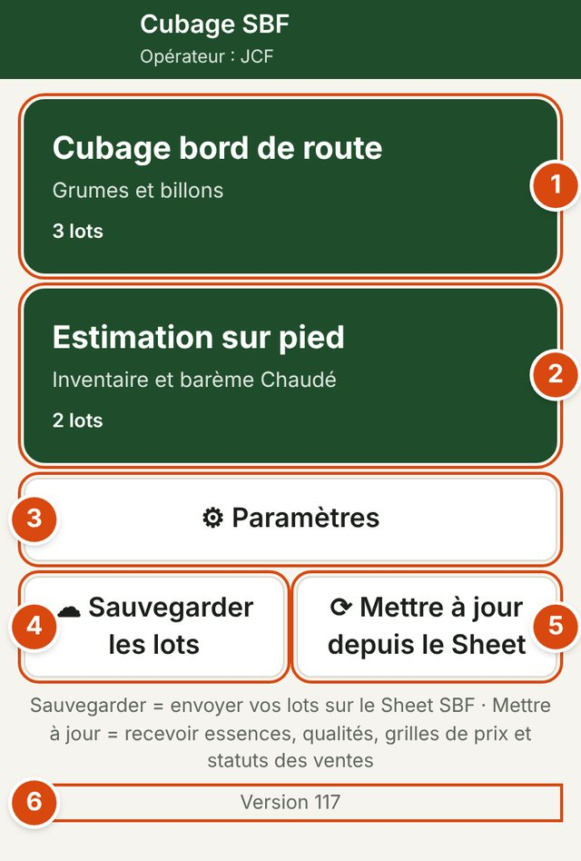 | | 1 | Cubage bord de route : lots de grumes cubées (billons, qualités, réductions), sous-lots, lots clients, bordereaux. Le nombre de lots est indiqué. | | 2 | Estimation sur pied : inventaires de bois sur pied, barème Chaudé, hauteurs et tronçons de qualité. | | 3 | Paramètres : qualité par défaut, mode vocal, synchronisation, changement de téléphone, copie de secours (chapitre 7). | | 4 | Sauvegarder les lots : envoie sur le Sheet SBF tous les lots modifiés depuis la dernière sauvegarde. Le nombre en attente est affiché en orange. | | 5 | Mettre à jour depuis le Sheet : reçoit essences, qualités, clients, grilles de prix communes et statuts de vos lots clients. Quand le bureau a modifié le référentiel, l'application le signale : faites cette mise à jour. | | 6 | Version de l'application installée. |
|
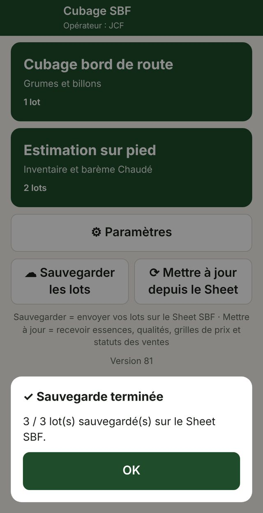 | | ✓ | Après une sauvegarde réussie, une fenêtre indique le nombre de lots envoyés. Sans réseau, les lots restent « à sauvegarder » et repartiront au prochain essai. |
|
3. Cubage bord de route
3.1 Le module
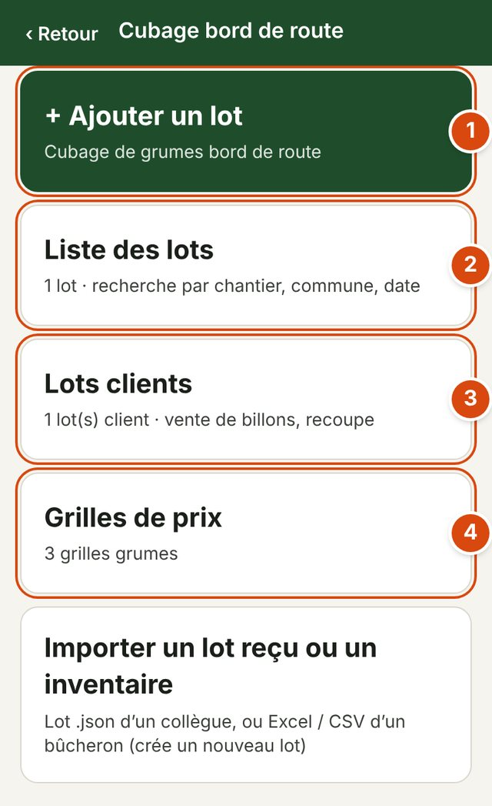 | | 1 | + Ajouter un lot : nouveau lot de cubage (voir 3.2). | | 2 | Liste des lots : tous vos lots (voir ci-dessous) ; les lots archivés sont regroupés en bas. | | 3 | Lots clients : ventes de billons (chapitre 4). | | 4 | Grilles de prix : grilles communes reçues du bureau et grilles créées sur le téléphone. |
|
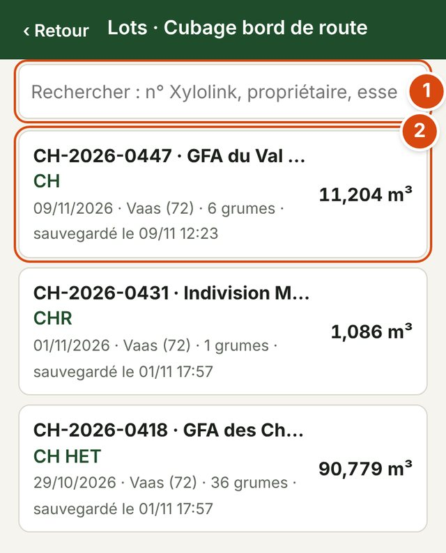 | | 1 | Recherche : n° Xylolink, propriétaire, essence (« CH », « HET »), commune ou date. | | 2 | Chaque lot affiche son n° Xylolink et son propriétaire, les essences présentes (en couleur), la date, la commune, le nombre de grumes, l'état de sauvegarde et le volume. |
|
3.2 Créer un lot
Module Cubage › + Ajouter un lot. Remplissez la fiche puis Créer le lot en bas d'écran.
| 1 | N° chantier Xylolink : obligatoire (sauf lot d'essai). C'est lui qui relie le cubage au dossier. |
| 2 | Propriétaire : il remplace le champ Chantier et sert de nom au lot (liste des lots, bordereaux, Sheet). Nom seul, tel qu'il doit figurer sur le bordereau propriétaire (pas d'adresse). |
| 3 | Point GPS : 📍 Relever la position (GPS du téléphone, sans réseau) ou 🗺 Placer sur la carte (réseau nécessaire). Voir 3.9. |
| 4 | Premier n° de grume (n° de la première plaquette) : la numérotation continue ensuite toute seule. |
| 5 | Essences et qualités du lot : touchez celles du chantier (vert = cochée). Seules celles-ci apparaîtront à la saisie. Le bouton + crée un code absent de la liste (voir ci-dessous). |
| 6 | Grille propriétaire (prix d'achat) : choisie dans le catalogue, ou « Aucune » pour la régler plus tard. |
| 7 | Grille client (prix de vente par défaut du lot). Les deux grilles restent modifiables à tout moment (3.7). |
| 8 | Lot d'essai / formation : jamais envoyé sur le Sheet, à supprimer ensuite. |
Ajouter une essence ou une qualité
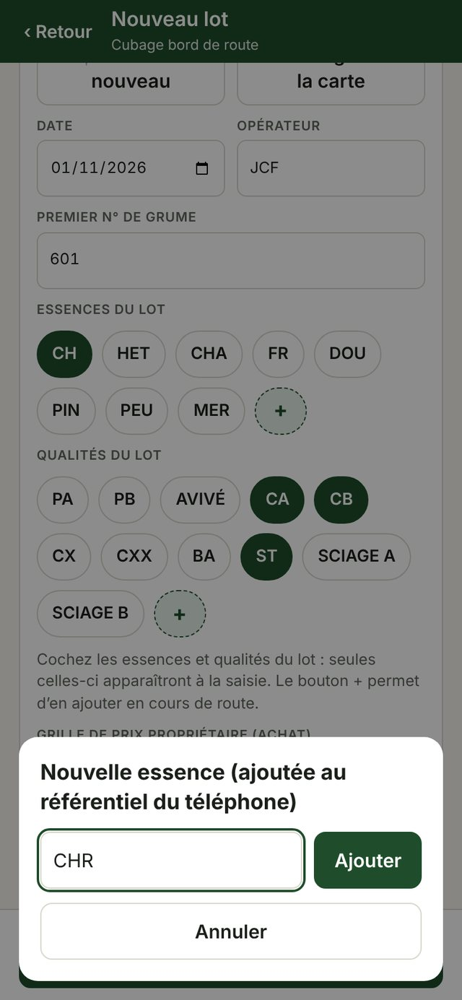 | | + | Le bouton + (pointillés) des essences ou des qualités ouvre cette fenêtre : tapez le code (ex. CHR, AUL, C+) puis Ajouter. Il est coché aussitôt dans le lot et reste disponible sur votre téléphone. | | → | Le même bouton existe dans la fiche « Essences et qualités » du lot, sur l'écran de saisie et dans la recoupe d'un lot client. | | ✓ | À la sauvegarde du lot, le code est proposé au bureau. S'il le valide, il entre dans le référentiel commun et tous les téléphones le reçoivent avec ⟳ Mettre à jour depuis le Sheet. |
|
Utilisez de préférence les codes existants : un code créé par erreur (faute de frappe) est lui aussi proposé au bureau, qui le refusera.
3.3 L'écran du lot
C'est le tableau de bord du chantier : volumes en tête, actions, sorties, puis la fiche du lot (modifiable).
| 1 | Saisir : saisie des grumes (3.4). |
| 2 | Listing : tous les billons, recherche, recoupe, corrections (3.8). |
| 3 | Récapitulatif : volumes par essence/qualité, achat, vente, marge (3.8). |
| 4 | Sous-lots : destinations client et affectation des grumes (3.6). |
| 5 | Grilles : grille propriétaire et grille client du lot (3.7). |
| 6 | Bordereau propriétaire : document de cubage pour le propriétaire (3.10). |
| 7 | Bordereau client : bordereau de réception pour un sous-lot ou tout le lot. |
| 8 | PDF interne / Excel : documents de travail SBF. |
| 9 | Envoyer à un collègue : partage du lot avec un autre téléphone (3.11). |
| 10 | Sauvegarder sur le Sheet SBF : envoie ce lot seul. Une fois envoyé, le bouton devient « Sauvegardé sur le Sheet · renvoyer » avec la date de la dernière sauvegarde. |
| 11 | Propriétaire (nom du lot), modifiable ici. |
| 12 | Point GPS : relever à nouveau, corriger sur la carte, ouvrir dans Google Maps. |
| 13 | Longueur des billons : « Saisie à chaque billon » ou « Fixe » (3.4). |
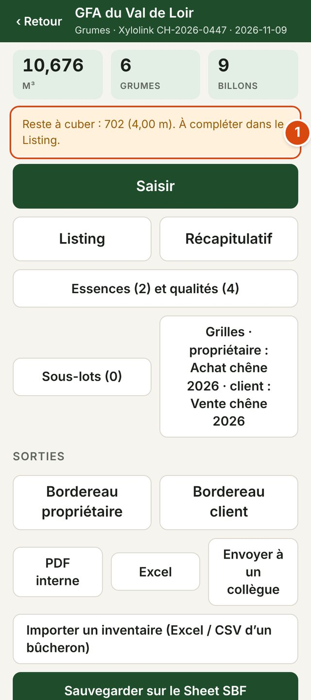 | | ! | Si une grume a encore un reste à cuber (3.4), une alerte en tête de l'écran du lot le rappelle, avec le n° de grume et la longueur restante. |
|
Lot d'essai devenu lot réel : dans la fiche d'un lot d'essai, Passer en lot réel (n° Xylolink obligatoire) ; il sera ensuite sauvegardé sur le Sheet comme les autres.
Le bloc Stock et ventes (entre les sorties et la fiche) indique combien de billons du lot sont en stock, vendus (lots clients) ou recoupés : un billon vendu ou recoupé ne peut plus être supprimé.
Importer un inventaire (Excel / CSV d'un bûcheron) ajoute au lot les grumes d'un fichier de bûcheron : format au 3.12.
3.4 Saisir les grumes
Une grume = un numéro, une essence et un ou plusieurs billons (12.1, 12.2…), chacun avec sa qualité, sa longueur en mètres (8,20) et son diamètre médian en cm. Le volume s'affiche aussitôt (cubage au diamètre médian, sur écorce).
| 1 | N° de la grume en cours, dans le bandeau, avec le volume du lot et le n° Xylolink. Le n° reste modifiable dans le champ N° grume (plaquettes). |
| 2 | Billon déjà saisi : replié en une ligne (qualité, dimensions, volume) pour éviter une modification par erreur. |
| 3 | ✎ rouvre ce billon pour le corriger ; ✕ le supprime. |
| 4 | Billon en cours : qualité, longueur (m), diamètre (cm). + Réduction réfaction, + Note commentaire, + N° nouveau n° de plaquette pour un billon recoupé (le n° d'origine reste tracé : « ex 701.3 »). |
| 5 | Grume cubée en plusieurs fois ? : longueur totale facultative, à ne renseigner que si la grume n'est pas cubée entièrement le jour même (voir ci-dessous). |
| 6 | + Billon : ajoute un billon à la même grume ; le précédent se replie. |
| 7 | Grume suivante › : enregistre la grume et passe au numéro suivant. Un billon ajouté mais resté vide n'empêche plus d'enregistrer. |
Les autres éléments ne changent pas : essence de la grume (le + ajoute un code absent), sous-lot s'il y en a, 🎤 Mode vocal (3.5), Terminer pour quitter.
Réduction : en cm sur la longueur et/ou le diamètre (« 100 » sur un 8 m × 52 → cubé 7,00 m × Ø52) ; le listing et les bordereaux gardent la vraie dimension et affichent la réduction.
Grume cubée en plusieurs fois : la longueur totale (facultative)
Ce n'est pas une information obligatoire. Dans le cas courant (grume cubée entière en une fois), on ne la renseigne jamais : c'est pour cela qu'elle n'est qu'un lien discret (Grume cubée en plusieurs fois ? Longueur totale…) et non un champ du formulaire.
Elle ne sert que dans un cas précis : une grume qu'on ne cube pas entièrement le jour même.
Exemple : une grume de 12 m dont on cube aujourd'hui un billon de 5 m pour un client ; les 7 m restants seront cubés plus tard. En indiquant 12 m en longueur totale, l'application :
- affiche « Reste à cuber : 7,00 m » dans le listing et une alerte sur l'écran du lot, pour ne pas oublier ce bois ;
- préremplit le billon suivant à 7 m quand on y revient (« reste 7,00 m › » dans le listing) ;
- permet de déclarer le reste en chute s'il est abandonné ;
- envoie au Sheet (onglet GRUME) la longueur d'origine, la longueur cubée et le reste (et la chute) : on garde la traçabilité de la grume initiale.
| Situation | Longueur totale ? |
|---|
| Grume cubée entière en une fois (cas courant) | Non, on n'y touche pas |
| Une partie de la grume est cubée aujourd'hui, le reste plus tard | Oui, pour suivre le reste à cuber |
| Billon recoupé plus tard au chargement ou à la scierie | Non : utiliser le ✂ du listing (3.8), qui a sa propre gestion du reste |
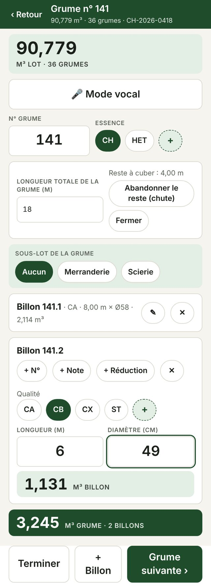 | 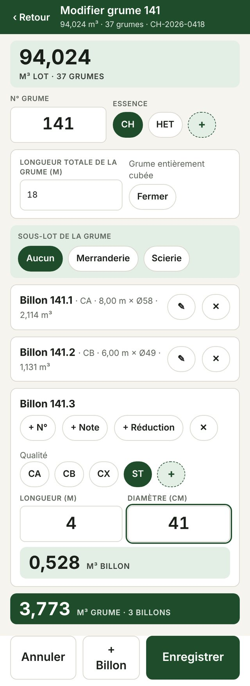 | | a | Dans la saisie, Grume cubée en plusieurs fois ? Longueur totale… puis la longueur totale (ici 18 m). Les billons saisis en sont déduits ; il reste 4 m, signalé sur le lot et dans le listing. | | b | Plus tard : dans le Listing, touchez « reste 4,00 m › » sous le n° de la grume. Elle se rouvre avec un billon déjà rempli à la longueur restante : choisissez la qualité, mesurez le diamètre, enregistrez. « Grume entièrement cubée » confirme. | | c | Si le reste ne sera jamais cubé : Abandonner le reste (chute) dans le bloc longueur totale ; Annuler l’abandon le rétablit. |
|
À la voix : « note longueur totale douze » (ou « note origine douze ») ; « note chute deux » abandonne 2 m.
Longueur fixe
Pour un lot de billons tous de même longueur (bois de chauffage, billons 2 m, 4 m…), choisissez dans la fiche du lot Longueur des billons › Fixe
(repère 12 de l'écran du lot). La dernière longueur enregistrée est reprise à chaque billon et le curseur va directement au diamètre.
Il suffit de corriger la longueur une fois pour qu'elle serve aux billons suivants.
Corriger ou supprimer
Listing › ✎ sur la ligne pour rouvrir la grume, ✕ pour la supprimer. Un billon vendu ou recoupé dans un lot client ne peut plus être supprimé.
3.5 Mode vocal (cubage)
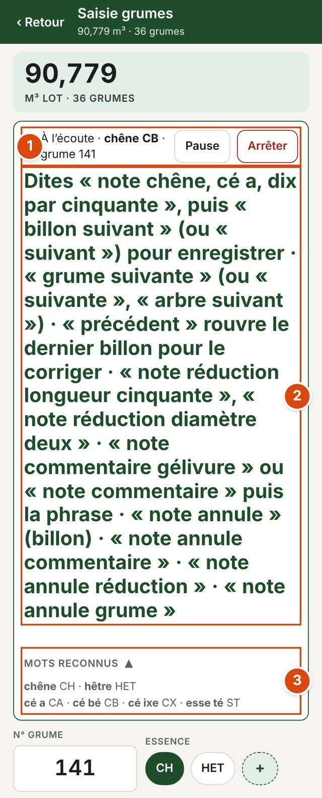 | | 1 | 🎤 Mode vocal lance l'écoute (point rouge clignotant) ; l'essence, la qualité et le n° de grume en cours sont rappelés. Pause / Arrêter. Première fois : avec du réseau, téléchargement du modèle de reconnaissance (42 Mo, une seule fois) ; ensuite tout fonctionne sans réseau et aucun son ne quitte le téléphone. | | 2 | Aide-mémoire des phrases (tableau ci-dessous). | | 3 | « Mots reconnus » : la façon de dire les essences et qualités du lot. |
|
Le principe : dicter, vérifier, puis « billon suivant »
- Dictez le billon d'une traite : « note chêne, cé a, dix par cinquante » (essence, qualité, longueur, diamètre). Il apparaît à l'écran comme billon en cours, rien n'est encore enregistré.
- Vérifiez sur l'écran (ou à l'écoute du bip). Corrigez si besoin : « note diamètre quarante-huit », « note longueur huit vingt ». Ajoutez si besoin une réduction ou un commentaire.
- Dites « billon suivant » : le billon est enregistré, le téléphone le relit (« cé a, dix mètres, cinquante ») et un nouveau billon de la même grume s'ouvre.
- Pour changer de grume, dites « grume suivante » : le billon en cours est enregistré, la grume est close et la suivante s'ouvre avec le numéro suivant.
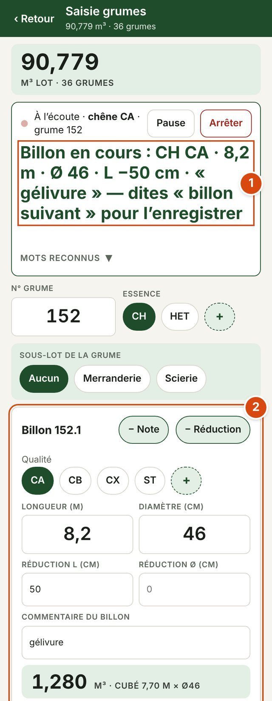 | | 1 | Le bloc vocal affiche le billon en cours et rappelle de dire « billon suivant » pour l'enregistrer. | | 2 | Le billon se remplit à l'écran au fur et à mesure : qualité, longueur, diamètre, réduction (ici « note réduction longueur cinquante ») et commentaire (« note commentaire gelé », enregistré « gélivure »). |
|
Chaque phrase commence par « note » (mot de départ, réglable dans Paramètres) : tout le reste est ignoré, vous pouvez parler avec le bûcheron sans rien enregistrer.
Exception : les commandes d'enregistrement et de navigation se disent seules, sans « note ».
| Vous dites | L'application fait |
|---|
| Dicter un billon |
| « note chêne, cé a, dix par cinquante » | Billon en cours : chêne, CA, 10 m, Ø 50 |
| « note huit vingt par quarante-deux » | 8,20 m × Ø 42, essence et qualité du billon précédent |
| « note cé bé, quatre et demi par quarante-quatre » | Qualité CB, 4,50 m × Ø 44 (essence conservée) |
| « note diamètre quarante-huit » · « note longueur neuf » | Corrige un seul champ du billon en cours |
| « note réduction longueur cinquante » · « note réduction diamètre deux » | Réduction de 50 cm sur la longueur / 2 cm sur le diamètre |
| « note commentaire gelé » | Commentaire « gélivure » : on dit un mot de la liste, l'application écrit le texte associé (voir ci-dessous) |
| « note commentaire » … puis la phrase | Commentaire libre : dictez la phrase dans les 12 secondes |
| « note longueur totale dix-huit » (ou « note origine dix-huit ») | Seulement pour une grume cubée en plusieurs fois : longueur totale 18 m, le reste à cuber est suivi nouveau |
| « note chute deux » | Abandonne 2 m de la grume en chute nouveau |
| Enregistrer et naviguer (sans « note ») |
| « billon suivant » ou « suivant » | Enregistre le billon en cours et ouvre le billon suivant de la même grume |
| « grume suivante » ou « suivante » ou « arbre suivant » | Enregistre le billon en cours, clôt la grume, passe au numéro suivant |
| « précédent » | Rouvre le dernier billon enregistré pour le corriger (puis « suivant » pour le réenregistrer) |
| « terminé » | Quitte l'écran de saisie (refusé si un billon est entamé) |
| Annuler et autres commandes |
| « note annule » | Efface le billon en cours ; s'il est vide, retire le dernier billon enregistré de la grume |
| « note annule commentaire » · « note annule réduction » | Retire le commentaire / la réduction du billon en cours |
| « note annule grume » | Vide la grume en cours ; si elle est déjà vide, rouvre la grume précédente |
| « note numéro cent douze » | Change le n° de la grume en cours (112) |
| « note pause » / « note reprise » | Suspend / reprend l'écoute |
- « par » sépare la longueur du diamètre. Sans « par », le dernier nombre est le diamètre. Longueurs : « huit » = 8 m, « huit vingt » = 8,20, « huit et demi », « huit virgule vingt-cinq ».
- Qualités lettre par lettre : CA « cé a », CB « cé bé », CX « cé ixe », CXX « cé double ixe », ST « esse té », PA « pé a » ; « avivé » se dit « avive ». Le merrain n'est pas encore reconnu.
- Avec la longueur fixe (3.4), la longueur est reprise : il suffit de dicter « note quarante-six » puis « suivant ».
- Mots de commentaire : certains mots ne sont pas connus du moteur de reconnaissance (gélivure, roulure, échauffure…). On dit donc un mot reconnu et l'application écrit le terme exact : gelé → gélivure, roulé → roulure, échauffé → échauffure, pourri → pourriture, fendu → fente, noueux → nœuds, courbé → courbure, mort → bois mort, piqué → piqûres… Les mots dits tels quels : pourriture, fente, nœuds, courbure, fourche, aubier, creux, mitraille, fissure, chancre, cicatrice, bois de réserve… (liste complète dans Paramètres › Mode vocal).
- Écran allumé (verrouillé, le micro se coupe) ; par vent fort, une oreillette ou un micro Bluetooth aide beaucoup.
Téléphone mis en service avant la version 82 : il peut avoir gardé l'ancienne liste de commentaires (« gélivure, pourriture, roulure… ») où « gélivure », « roulure » et « échauffure » ne sont jamais reconnus. Vérifiez une fois : Paramètres › Mode vocal › Vérifier que les mots vocaux sont connus du moteur. Si ces mots sont signalés, remplacez-les dans le champ des mots de commentaire par « gelé = gélivure, roulé = roulure, échauffé = échauffure ».
Un billon dicté mais jamais suivi de « billon suivant » ou « grume suivante » n'est pas enregistré. Avant de quitter, vérifiez que le bloc vocal n'affiche plus « Billon en cours » (« terminé » refuse de quitter dans ce cas).
3.6 Sous-lots (destinations client)
Un sous-lot = une destination (nom, client, grille client éventuelle). On affecte les grumes pendant la saisie ou après coup.
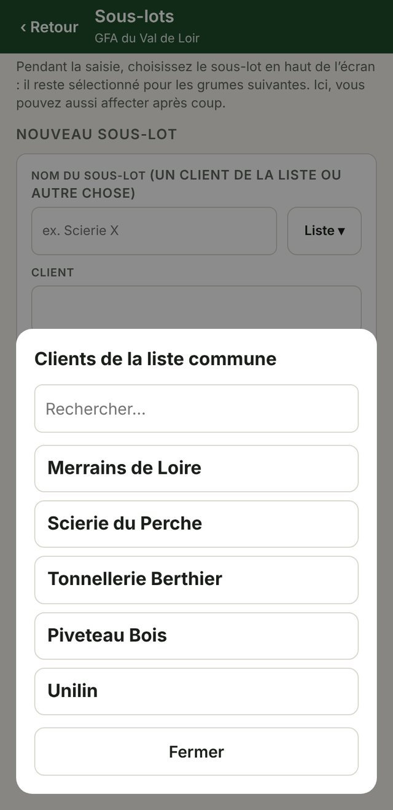 | 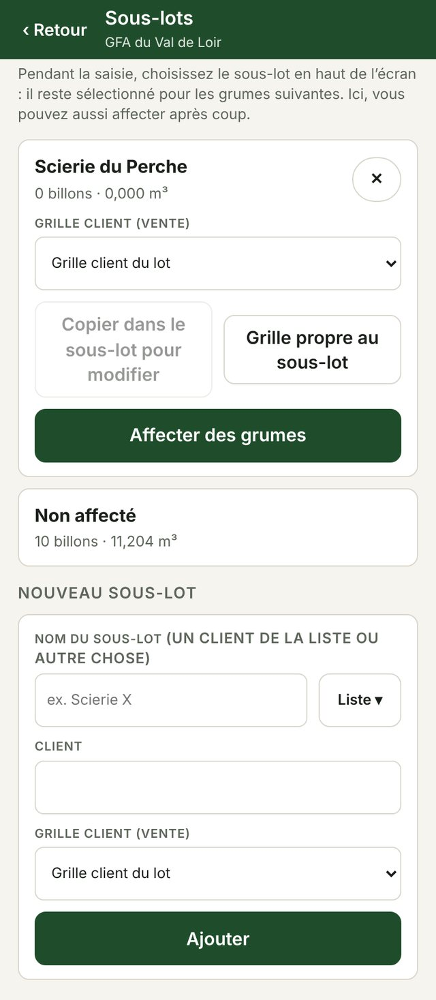 | | a | Nouveau sous-lot : Liste ▾ ouvre la liste commune de clients (tenue par le bureau) ; un appui remplit le nom. Vous pouvez aussi taper un autre nom (destination, « Merranderie »…). Un client absent de la liste sera proposé au bureau à la sauvegarde. | | b | Écran Sous-lots : chaque sous-lot avec son volume, sa grille client (« Grille client du lot » par défaut, une grille du catalogue, ou une grille propre au sous-lot) et le bouton Affecter des grumes ; « Non affecté » compte le reste. |
|
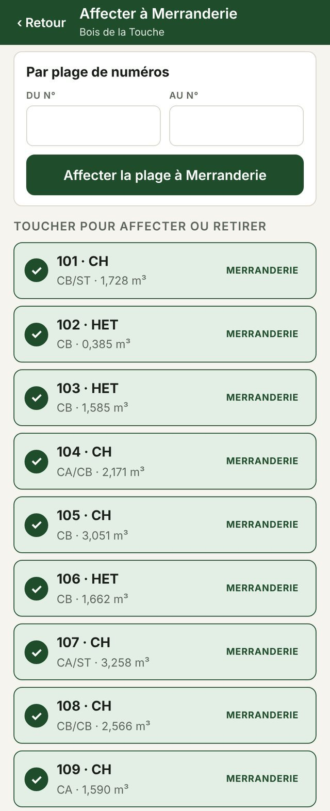 | | ↔ | Écran Affecter : par plage de numéros (du 101 au 118) ou en touchant les grumes une à une (coche verte). Toucher à nouveau retire la grume. |
|
3.7 Grilles de prix du lot
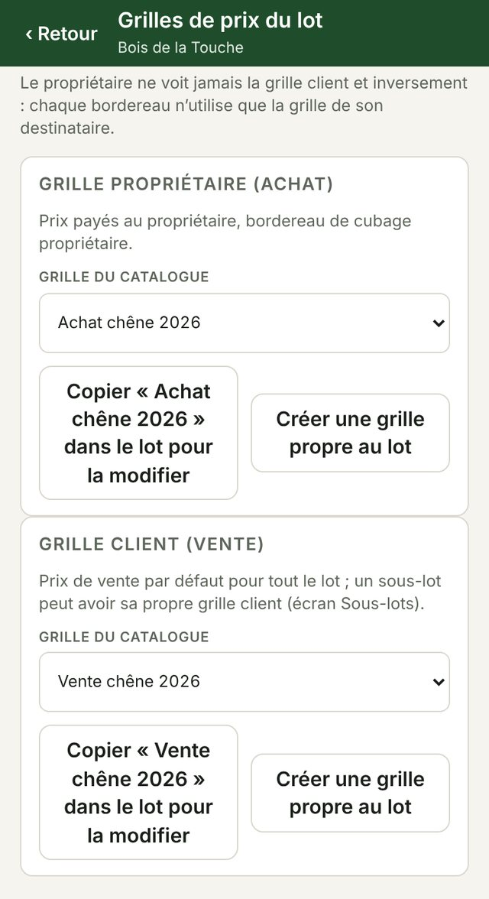 | | P | Grille propriétaire (achat) : utilisée pour le bordereau propriétaire et la colonne « Achat » du récapitulatif. | | C | Grille client (vente) : prix de vente par défaut du lot ; un sous-lot peut avoir la sienne. | | ✎ | Chaque grille : une grille du catalogue, ou Copier … dans le lot pour l'ajuster (prix négocié, client qui change son prix lot par lot), ou Créer une grille propre au lot. |
|
Une ligne de grille = essence, qualité, Ø min, Ø max (bornes incluses, ex. 30 à 49 puis 50 et +), prix €/m³. Champ vide = toutes. La ligne la plus précise l'emporte.
Le propriétaire ne voit jamais la grille client et inversement : chaque bordereau n'utilise que la grille de son destinataire.
3.8 Listing, recoupe et récapitulatif
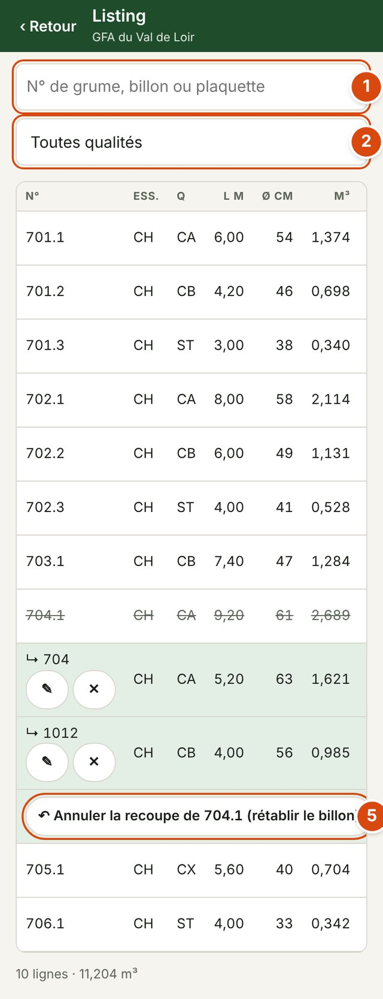 | | 1 | Recherche par n° de grume, de billon, de plaquette ou de tronçon (« 704 », « 1012 »). La barre reste visible en faisant défiler. | | 2 | Filtres par qualité, et par essence quand le lot en a plusieurs ; sous-lot si le lot en a. | | 3 | ✂ Recouper le billon (voir ci-dessous). | | 4 | ✎ rouvre la grume, ✕ la supprime. Un billon vendu ou recoupé ne peut plus être supprimé. | | 5 | Billon recoupé : barré, avec ses tronçons en dessous (↳ 704, ↳ 1012) modifiables ou supprimables, et ↶ Annuler la recoupe. |
|
Recouper un billon (✂)
Quand un billon est recoupé au chargement ou à la scierie, recoupez-le dans le lot : chaque tronçon devient un billon à part entière (stock, ventes, bordereaux), et le billon d'origine reste tracé.
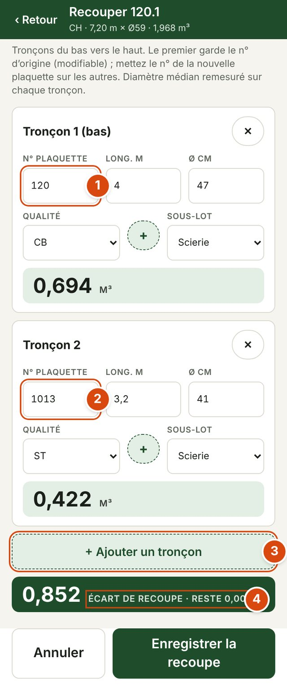 | | 1 | Tronçon 1 (bas) : il garde le n° d'origine (modifiable). Longueur, diamètre médian remesuré, qualité. | | 2 | Tronçons suivants : n° de la nouvelle plaquette (un n° déjà utilisé est refusé). | | 3 | + Ajouter un tronçon : un seul tronçon est proposé au départ. | | 4 | Écart de recoupe (volume) et reste en longueur. Des tronçons plus longs que le billon demandent une confirmation. |
|
- Recoupe partielle : si les tronçons ne couvrent pas tout le billon, l'application propose Enregistrer, cuber le reste plus tard (le reste est suivi et signalé sur le lot, Compléter la recoupe plus tard) ou Le reste est une chute (abandonné).
- La recoupe est possible sur chaque billon, y compris dans un lot d'essai, et un sous-lot peut être choisi par tronçon.
- La recoupe depuis un lot client (chapitre 4) existe toujours.
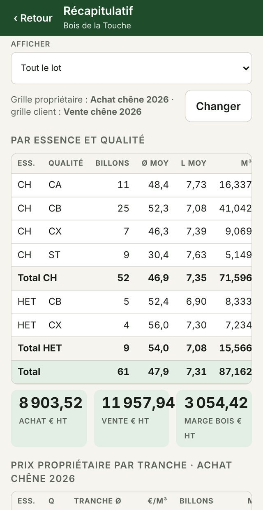 | | R | Récapitulatif : par essence et qualité (billons, Ø moyen, longueur moyenne, m³), montants achat, vente et marge bois HT, puis prix par tranche de diamètre de chaque grille. Filtre par sous-lot en haut ; PDF et Excel en bas. |
|
3.9 Point GPS du lot
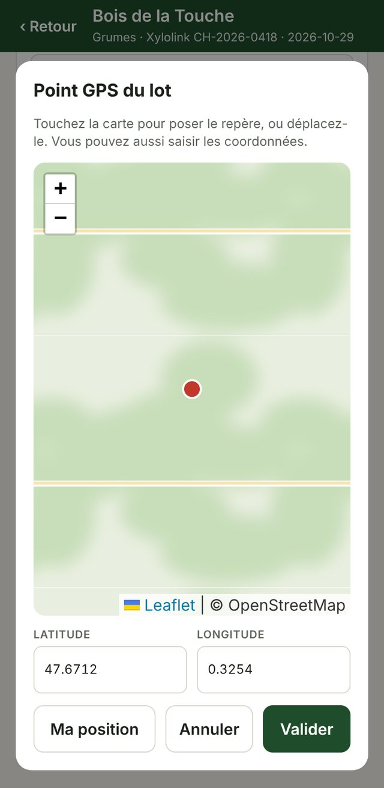 | | 📍 | Relever la position : position du téléphone, sans réseau. La précision s'affiche (± 6 m) ; réessayez à découvert si elle est mauvaise. | | 🗺 | Corriger sur la carte : touchez la carte pour poser le repère, faites-le glisser, ou saisissez latitude/longitude. Ma position recentre sur le téléphone ; Valider enregistre. Le fond de carte (OpenStreetMap) demande du réseau. | | ↗ | Le point figure dans les bordereaux et l'Excel sous forme de lien Google Maps cliquable. |
|
3.10 Sorties : bordereaux et documents
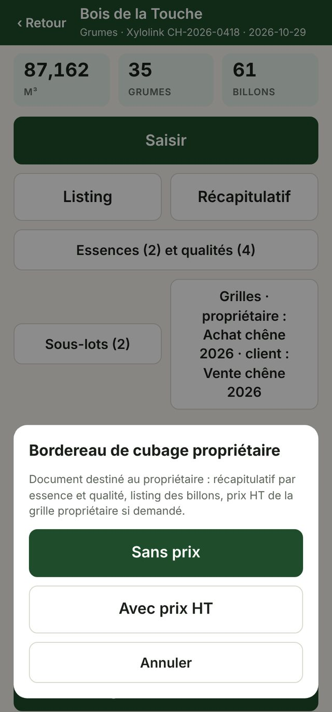 | 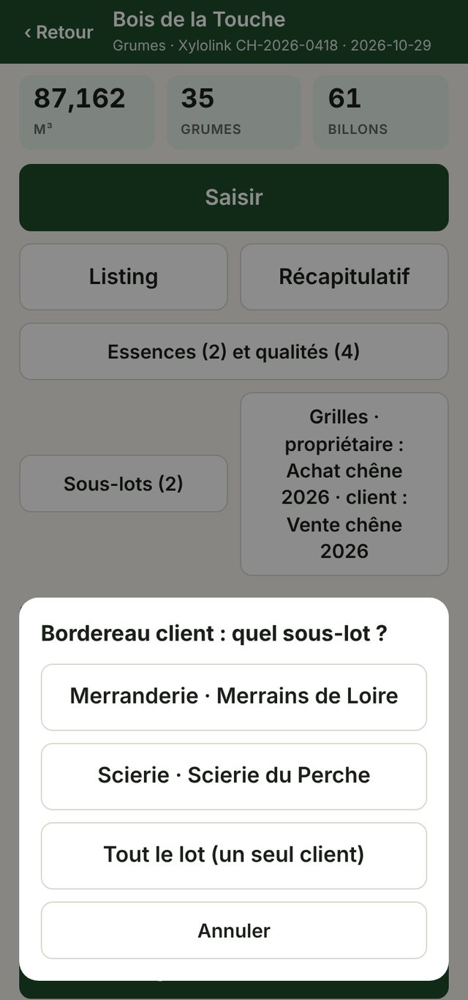 | | a | Bordereau propriétaire : choisir Sans prix ou Avec prix HT (grille propriétaire). | | b | Bordereau client : choisir d'abord le sous-lot (ou « Tout le lot » s'il n'y a qu'un client), puis sans ou avec prix HT (grille client). |
|
Le PDF est enregistré dans les Téléchargements du téléphone et peut être ouvert, envoyé par mail ou WhatsApp. Chaque page porte le logo, le numéro du bordereau
et les mentions légales de SBF ; le point GPS est un lien cliquable ; une zone de signature termine le document.
Bordereau de cubage propriétaire (BC-…), avec prix HT : cartouche, récapitulatif par essence et qualité, prix par tranche de diamètre, listing des billons avec réductions et notes.
Bordereau de réception client (BR-…) du sous-lot « Merranderie », avec prix HT de la grille client.
| Bouton | Contenu |
|---|
| PDF interne | Document de travail SBF : récapitulatifs achat et vente, listing complet, sous-lots. Tout le lot, un sous-lot, ou un fichier par sous-lot. |
| Excel | Mêmes données en tableur (une ligne par billon, avec lien GPS). |
3.11 Sauvegarder, archiver, partager
- Sauvegarder : accueil ☁ Sauvegarder les lots (tous les lots en attente) ou bouton du lot (ce lot seul). Le lot complet (grumes, billons, prix, sous-lots, notes) part sur le Sheet. Renvoyer après modification remplace la version précédente.
- Archiver (une fois sauvegardé) : le lot reste sur le téléphone, dans la liste « lots archivés », sans encombrer la liste courante.
- Envoyer à un collègue : produit un fichier du lot (.json) à partager (mail, WhatsApp, AirDrop). Votre copie peut passer en lecture seule pour que deux téléphones ne modifient pas le même lot ; Reprendre la main la rend modifiable.
- Recevoir un lot : Cubage › Liste des lots › Importer un lot reçu ou un inventaire. L'application propose de l'ajouter comme nouveau lot ou de le fusionner dans un de vos lots (chantier cubé à plusieurs téléphones) ; les numéros déjà présents sont signalés.
3.12 Importer un inventaire de bûcheron (Excel / CSV)
Deux entrées : sur l'écran d'un lot, Importer un inventaire (Excel / CSV d'un bûcheron) (ajoute au lot ouvert), ou Cubage › Importer un lot reçu ou un inventaire
qui propose Nouveau lot (la fiche s'ouvre : n° Xylolink, essences, qualités) ou l'un de vos lots en cours. Formats acceptés : .xlsx, .xls, .csv.
Colonnes reconnues
Le fichier doit contenir une ligne d'en-tête (dans les 30 premières lignes de l'onglet, titres et lignes vides au-dessus acceptés), puis une ligne par grume.
Majuscules, accents, espaces et ponctuation des titres sont ignorés (« N° grume », « Diamètre (cm) », « longueur_m » sont reconnus). Les colonnes peuvent être dans n'importe quel ordre ; les autres colonnes sont ignorées.
| Donnée | Statut | Titres de colonne acceptés | Contenu |
|---|
| Numéro | obligatoire | Numéro, Num, N, No, N grume, Grume, Numéro grume | N° de plaquette (112). Une ligne sans numéro est ignorée. |
| Longueur | obligatoire | Longueur, Longueur m, Long, L, Lg, Lg m | En mètres : 8,20 ou 8.20 (arrondi au cm). |
| Diamètre | obligatoire | Diamètre, Diamètre cm, Diam, D, Ø, Diamètre médian | En cm, diamètre médian ; les décimales sont tronquées (52,7 → 52). |
| Qualité | facultatif | Qualité, Qual, Q, Classe | Code (CA, CB, ST…), converti en majuscules. |
| Essence | facultatif | Essence, Ess, Esp, Espèce | Code (CH, HET…), converti en majuscules. |
| Réduction L | facultatif | Réduction L, Réduction longueur, Red L | Réfaction en cm sur la longueur (100 = 1 m). |
| Réduction Ø | facultatif | Réduction D, Réduction diamètre, Red D, Réduction Ø | Réfaction en cm sur le diamètre. |
| Note | facultatif | Note, Commentaire, Observation, Obs, Remarque, Rem | Commentaire du billon (gélivure, pourriture au pied…), repris dans le listing, les exports, le Sheet et les bordereaux. |
Exemple (fichier modèle modele-import-inventaire.xlsx, dossier manuels/ du dépôt GitHub)
| numero | essence | qualite | longueur_m | diametre_cm | reduction_l | reduction_d | note |
|---|
| 101 | CH | CA | 8,20 | 52 | | | |
| 102 | CH | CB | 6,40 | 47 | 100 | | gélivure |
| 103 | HET | CX | 10,00 | 61 | | | |
| 104 | CH | ST | 4,50 | 31 | | | |
Excel ou CSV. Un CSV enregistré par Excel en français (séparateur point-virgule, virgule décimale « 8,20 », accents) est lu correctement, de même qu'un CSV à point décimal (8.20). Contrôlez toujours le volume total annoncé à la fin de l'import.
Règles à connaître
- Une ligne = une grume d'un seul billon. Une grume en plusieurs billons doit être complétée ensuite à la saisie (Listing › ✎ › + Billon).
- Lignes ignorées : sans numéro, ou longueur / diamètre vides ou nuls. Numéros déjà présents dans le lot : ignorés et comptés dans le message final.
- Sans colonne Essence ou Qualité (ou cellule vide), l'application demande à l'import l'essence et la qualité à appliquer à ces lignes.
- Une essence ou une qualité inconnue du lot y est ajoutée automatiquement (vérifiez l'orthographe des codes dans le fichier).
- Tous les onglets du classeur sont lus : chaque onglet qui contient la ligne d'en-tête est importé.
- Si un sous-lot est sélectionné dans la saisie, les grumes importées y sont affectées.
- Le lot reste à sauvegarder : pensez à l'envoyer sur le Sheet.
Si l'application répond « Aucune grume trouvée », la ligne d'en-tête n'a pas été reconnue : vérifiez qu'il existe bien trois colonnes intitulées Numéro, Longueur et Diamètre.
4. Lots clients (vente de billons)
Un lot client regroupe des billons d'un ou plusieurs lots du téléphone pour un client. Un billon ne peut appartenir qu'à un seul client.
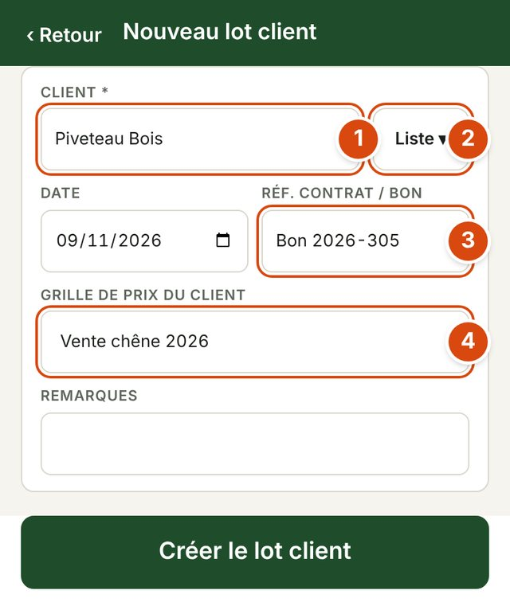 | | 1 | Client (obligatoire). | | 2 | Liste ▾ : liste commune de clients, un appui remplit le champ. Un client absent de la liste sera proposé au bureau à l'envoi. | | 3 | Référence du contrat ou du bon. | | 4 | Grille de prix du client. Puis Créer le lot client. |
|
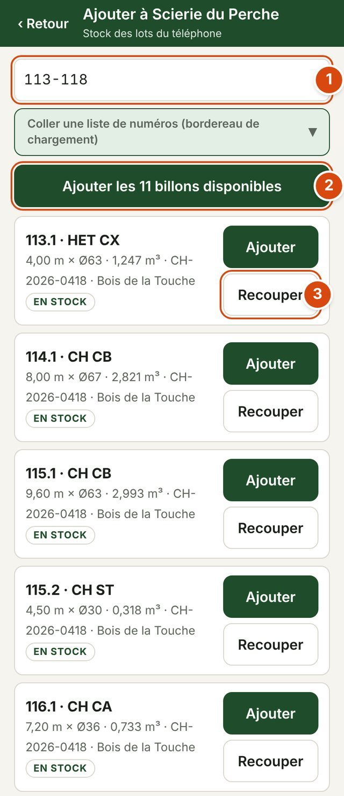 | | 1 | Tapez un numéro (« 112 », « 112.2 ») ou une plage (« 113-118 ») ; « Coller une liste de numéros » accepte un bordereau de chargement entier. | | 2 | Ajouter les n billons disponibles : tout ajouter d'un coup, ou Ajouter billon par billon. Les billons déjà vendus ou recoupés sont signalés. | | 3 | Recouper : tronçons du bas vers le haut avec un nouveau diamètre médian chacun ; le premier garde le n° d'origine, les suivants prennent le n° de la nouvelle plaquette. |
|
| 1 | Ajouter des billons (numéros, plages, liste collée). |
| 2 | Prix de vente : la grille choisie est copiée dans le lot et complétée d'une ligne par essence × qualité présente ; renseignez les prix manquants. |
| 3 | Récapitulatif : par essence et qualité, par tranche de prix, et par grume (voir ci-dessous). |
| 4 | Bordereau de réception (PDF client), sans ou avec prix HT. |
| 5 | Fiche du lot client : client (Liste ▾), date, référence, grille, remarques, statut. |
| 6 | Transmettre au bureau : le lot passe « Transmis » et devient en lecture seule ; les lots d'origine sont sauvegardés automatiquement. Le bureau valide la vente avec le n° de facture Xylolink. |
La liste des billons du lot client affiche maintenant pour chacun le prix au m³, le prix total et l'origine (n° Xylolink et propriétaire du lot).
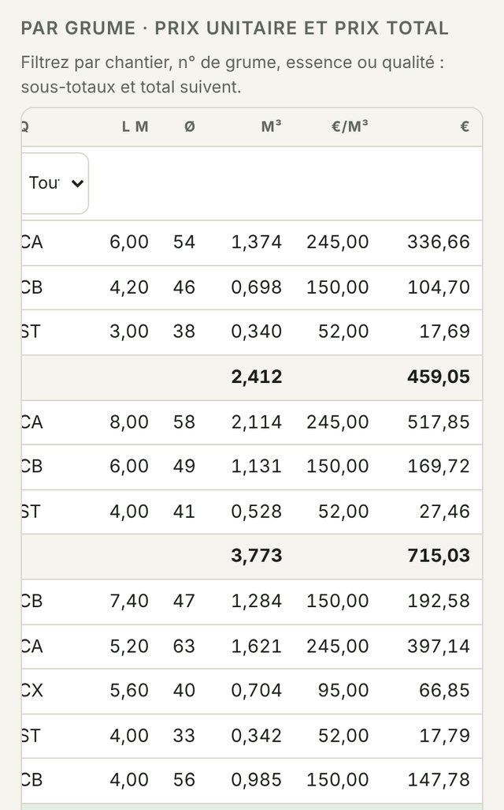 | | Σ | Récapitulatif par grume : chaque billon avec son prix unitaire et son prix total, un sous-total par grume, filtres par chantier, n° de grume, essence ou qualité (sous-totaux et total suivent). Sur téléphone, faites glisser le tableau vers la gauche pour voir les colonnes de prix. |
|
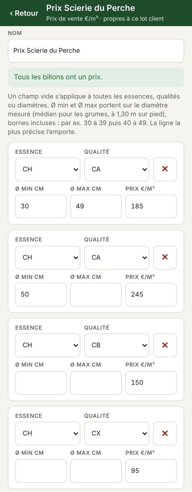 | 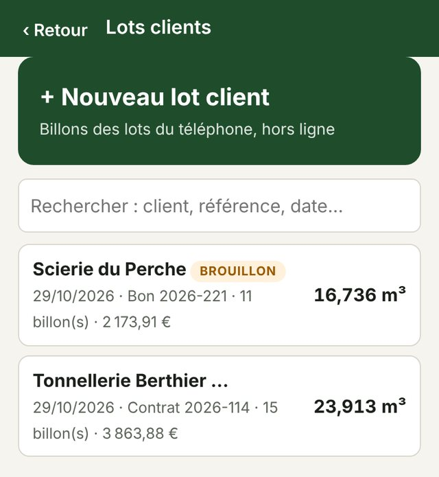 | | € | Prix de vente propres au lot client : une ligne par essence/qualité, Ø min/max facultatifs. « Tous les billons ont un prix » confirme qu'aucun billon n'est oublié. | | ✓ | Liste des lots clients avec leur statut : brouillon, transmis, vente validée par le bureau ou annulé. Le statut se met à jour avec ⟳ Mettre à jour depuis le Sheet. |
|
Un lot client supprimé après transmission prévient le Sheet (réseau nécessaire) : ses billons repassent en stock.
5. Estimation de bois sur pied
5.1 Créer un lot
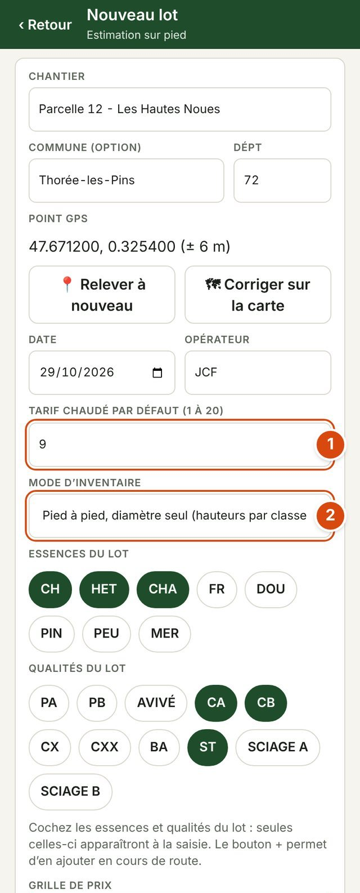 | | 1 | Tarif Chaudé par défaut (1 à 20), modifiable ensuite par essence et par classe. | | 2 | Mode d'inventaire : « pied à pied, diamètre seul » (hauteurs données ensuite par classe), « par classes avec effectifs », ou « pied à pied numéroté » (diamètre + hauteur par tige). | | 3 | Grille de prix sur pied (facultative). |
|
Le lot sur pied garde le champ Chantier (nom de la parcelle) ; comme pour le cubage : commune, point GPS, essences et qualités du lot (au moins une qualité doit être cochée).
5.2 Pointer les tiges
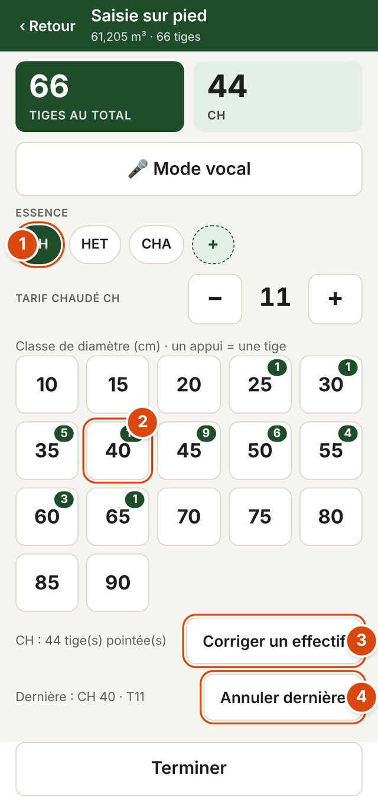 | | 1 | Choisissez l'essence (pastilles) ; le compteur indique les tiges du lot et de l'essence. Le tarif Chaudé de l'essence se règle avec − / +. | | 2 | Un appui sur une classe de diamètre (à 1,30 m, pas de 5 cm par défaut) = une tige. La pastille indique le nombre de tiges de la classe. | | 3 | Corriger un effectif nouveau : remplace le nombre de tiges d'une classe d'un coup (voir ci-dessous). | | 4 | Annuler dernière retire la dernière tige pointée. |
|
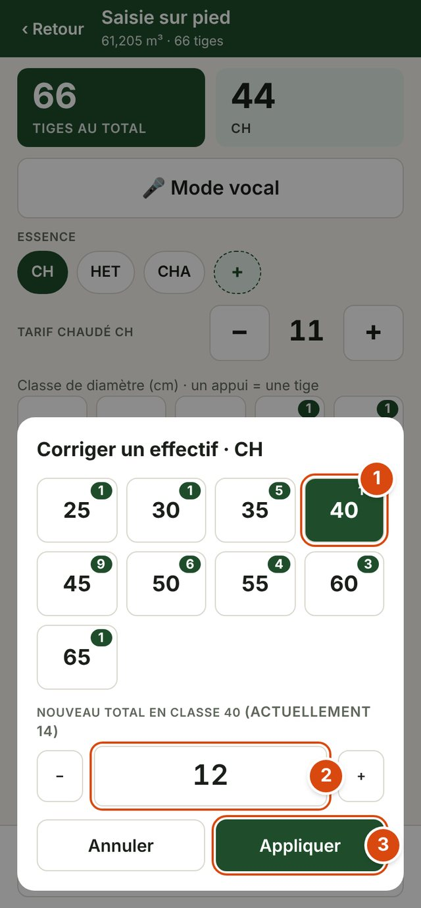 | | 1 | Choisissez la classe à corriger (le nombre actuel est rappelé). | | 2 | Tapez le nouveau total (ou − / +) : ici 12 au lieu de 14. | | 3 | Appliquer : les tiges sont ajoutées ou retirées pour atteindre ce total, pour l'essence en cours. |
|
En mode par classes avec effectifs, le champ Nombre de tiges est sous la grille : touchez la classe, tapez le nombre, ajoutez ; l'écran revient à la grille pour la classe suivante. En modification d'un pointage groupé, le nombre de tiges reste affiché et modifiable.
Mode vocal (pointage par classes)
Même principe que le cubage, chaque phrase commence par « note ». Ici, chaque phrase compte une tige aussitôt (pas de « suivant »).
| Vous dites | L'application fait |
|---|
| « note chêne quarante » | Une tige de chêne en classe 40 |
| « note trente-cinq » | Une tige en classe 35, essence conservée |
| « note chêne » | Change l'essence sans compter (le téléphone l'annonce) |
| « note tarif onze » | Tarif Chaudé 11 pour l'essence en cours (1 à 20) nouveau |
| « note annule » | Retire la dernière tige |
| « terminé » (sans « note ») | Quitte l'écran de saisie nouveau |
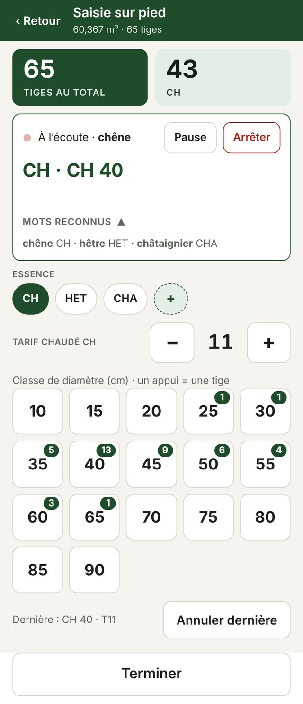 | | 🎤 | Mode vocal en pointage par classes : rappel des phrases et des essences reconnues. |
|
5.3 Pied à pied numéroté (et sa dictée)
En mode pied à pied numéroté, chaque arbre porte un numéro, son diamètre à 1,30 m, sa hauteur, son tarif et, si besoin, ses tronçons de qualité du bas vers le haut ; le reste de la tige est compté en « BI ». Au clavier : remplir les champs puis Ajouter ›.
Le mode vocal y est désormais disponible nouveau et fonctionne comme le cubage : l'arbre se remplit à l'écran, puis « suivant » l'enregistre.
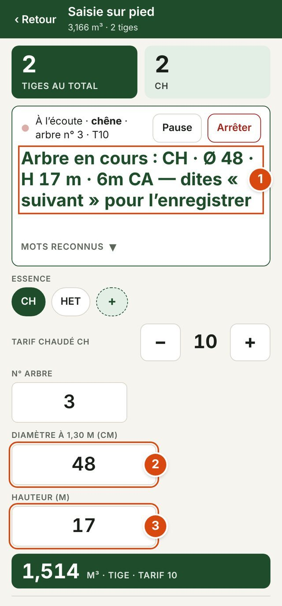 | | 1 | Le bloc vocal affiche l'arbre en cours et rappelle de dire « suivant » pour l'enregistrer. | | 2 | Diamètre à 1,30 m (cm). | | 3 | Hauteur (m). | | 4 | Tronçons de qualité dictés (ici 6 m en CA) ; le reste jusqu'à la hauteur est compté en « BI ». |
|
| Vous dites | L'application fait |
|---|
| « note chêne quarante-cinq par seize » | Arbre en cours : chêne, Ø 45 cm, hauteur 16 m |
| « note hauteur dix-huit virgule cinq » · « note diamètre cinquante » | Corrige un seul champ |
| « note tarif dix » | Tarif Chaudé 10 pour l'essence |
| « note tronçon six cé a » (ou « note cé a six ») | Tronçon de 6 m en CA, à la suite des précédents (du bas vers le haut) |
| « note tronçon quatre » puis « note cé bé » | Tronçon de 4 m, qualité donnée juste après |
| « note annule tronçon » | Retire le dernier tronçon |
| « suivant » (sans « note ») | Enregistre l'arbre (le téléphone annonce son numéro et le suivant) |
| « précédent » | Rouvre le dernier arbre enregistré pour le corriger |
| « note annule » | Efface l'arbre en cours (s'il est vide : supprime le dernier enregistré) |
| « note annule arbre » | Supprime le dernier arbre enregistré |
| « note numéro deux cents » | Change le n° de l'arbre en cours |
| « terminé » | Quitte l'écran (refusé si un arbre est entamé) |
En dictée pied à pied, quand vous changez d'essence (« note hêtre trente par quatorze »), vérifiez le tarif affiché : l'arbre garde actuellement le tarif de l'essence précédente. Dites « note tarif … » si besoin.
5.4 Hauteurs par classe et tronçons de qualité
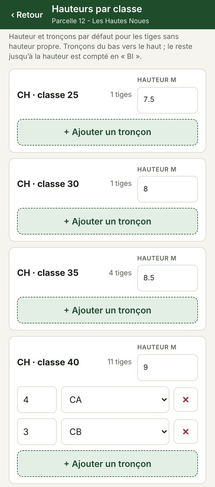 | 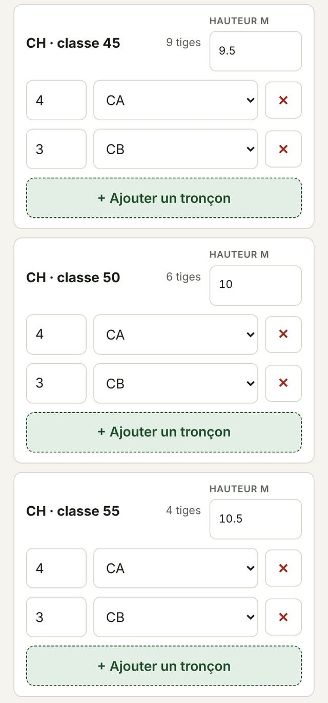 | | H | Pour chaque essence × classe : la hauteur (m) appliquée aux tiges sans hauteur propre. | | T | + Ajouter un tronçon : tronçons de qualité du bas vers le haut (hauteur + qualité). Le reste jusqu'à la hauteur totale est compté en « BI » (code réglable). | | ! | La somme des tronçons ne peut pas dépasser la hauteur : un message rouge s'affiche et la ligne n'est pas enregistrée. |
|
Les tiges sans hauteur apparaissent « sans H » dans le récapitulatif et ne sont pas cubées : renseignez toutes les classes.
5.5 Récapitulatif et tarifs
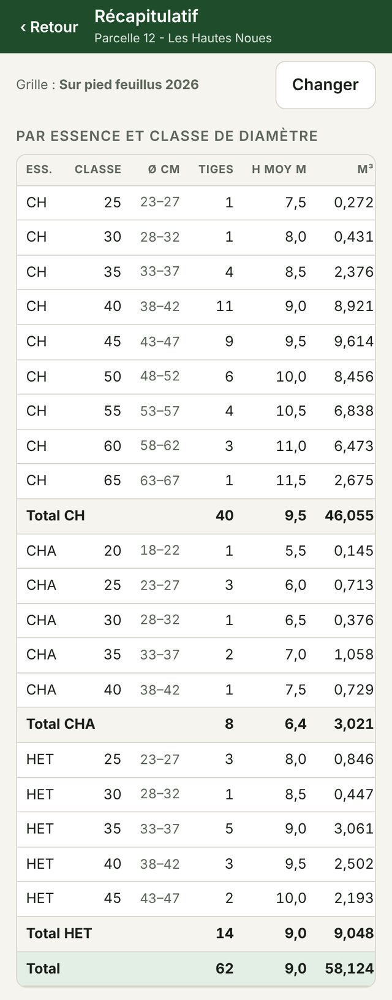 | 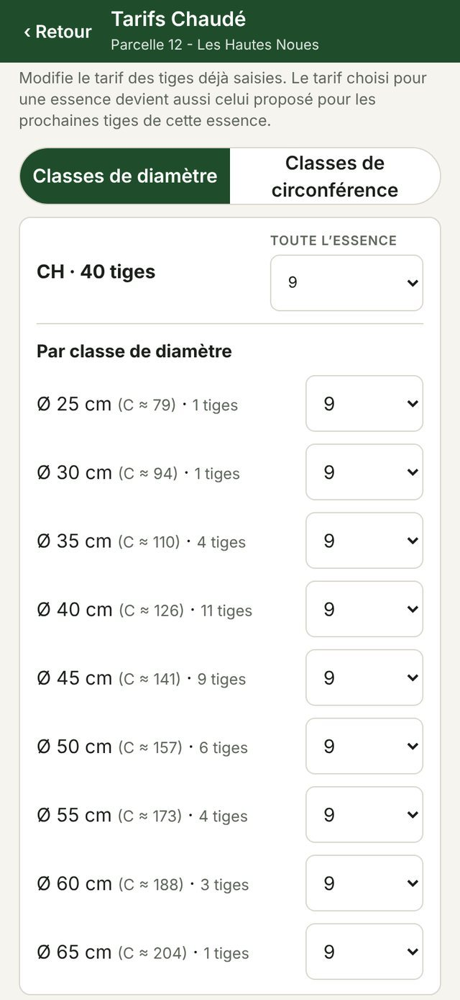 | | R | Récapitulatif : par essence et classe (tiges, hauteur moyenne, m³), par essence et qualité, par tranche de prix de la grille, puis par essence, qualité et classe. PDF et Excel en bas. | | T | Tarifs Chaudé : tarif de toute l'essence ou classe par classe (affichage en classes de diamètre ou de circonférence). Le tarif choisi devient celui proposé pour les tiges suivantes de l'essence. |
|
6. Sauvegarde, changement de téléphone, problèmes courants
6.1 Les bons réflexes
- Sauvegarder dès qu'il y a du réseau (accueil › ☁). Le Sheet est la copie de référence du bureau.
- Mettre à jour depuis le Sheet régulièrement : grilles de prix et statuts des ventes.
- Paramètres › Exporter tout (JSON) : copie de secours complète du téléphone, à déposer sur le Drive.
6.2 Changement de téléphone
- Demandez un nouveau lien au bureau en cas de téléphone perdu (une nouvelle clé remplace l'ancienne) ; sinon le même lien suffit.
- Ouvrez le lien sur le nouveau téléphone, ajoutez l'application à l'écran d'accueil.
- ⚙ Paramètres › Récupérer mes lots depuis le Sheet : vos lots sauvegardés reviennent (les lots déjà présents ne sont pas modifiés).
6.3 Problèmes courants
| Situation | Que faire |
|---|
| « Module PDF (ou Excel) non chargé » | Ouvrir une fois l'application avec du réseau : les modules se mettent en mémoire. |
| « Fond de carte non chargé » | La carte demande du réseau ; sans réseau, utilisez 📍 Relever la position. |
| « Accès à la position refusé » | Réglages du téléphone › Safari / Chrome › Position : autoriser. |
| Le mode vocal ne réagit pas | Commencez chaque phrase par « note ». Vérifiez le point rouge (pas en pause), l'accès au micro, et parlez plus près du téléphone. |
| Billon dicté absent du listing | Il n'a pas été enregistré : en cubage, il faut dire « billon suivant » (ou « suivant », « grume suivante ») après chaque billon. |
| Commentaire mal compris ou « commentaire libre indisponible » | Dites un mot de la liste (« note commentaire gelé » pour gélivure). Paramètres › Mode vocal › Vérifier que les mots vocaux sont connus du moteur signale les mots jamais reconnus (voir 3.5). |
| « Reste à cuber » affiché sur le lot | Une grume cubée en plusieurs fois n'est pas terminée : Listing › « reste … m › » pour cuber le reste, ou abandonner le reste en chute (3.4). |
| Billon impossible à recouper ou à supprimer | Il est déjà vendu (lot client) ou recoupé : voir la colonne Statut du listing. |
| Client absent de la Liste ▾ | Tapez son nom : il sera proposé au bureau à l'envoi. Une fois validé, faites « Mettre à jour depuis le Sheet ». |
| Mot d'essence non reconnu | Seuls les mots du vocabulaire français du modèle passent (aulne → « aune », robinier → « acacia », laricio → « pin corse »). Ajouter des mots : Paramètres › Mode vocal, ou demander au bureau (colonne mots_vocaux du Sheet). |
| Le n° Xylolink manque (bordure rouge) | Le renseigner dans la fiche du lot avant de sauvegarder. |
| Lot en lecture seule | Lot envoyé à un collègue ou copie du Sheet : Reprendre la main si c'est bien vous qui devez le modifier. |
| Échec de sauvegarde | Vérifier le réseau ; en cas de « clé refusée », redemander le lien de configuration au bureau. Le lot reste « à sauvegarder ». |
| Grille absente de la liste | Mettre à jour depuis le Sheet ; sinon demander au bureau de la publier comme grille commune. |
| Application affichée dans une ancienne version | Fermer complètement l'application puis la rouvrir avec du réseau ; comparer le numéro de version en bas de l'accueil. |
7. Paramètres
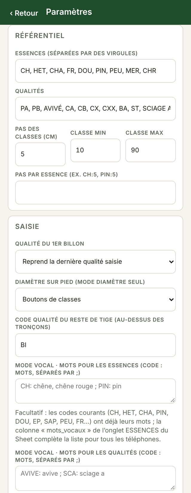 | 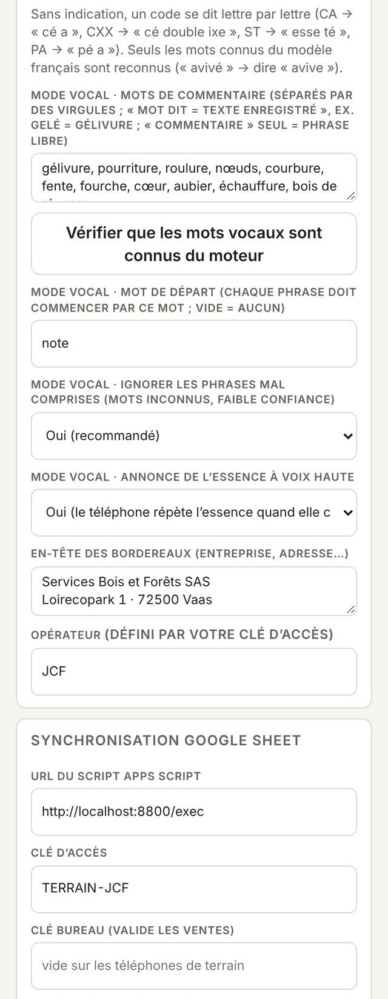 | 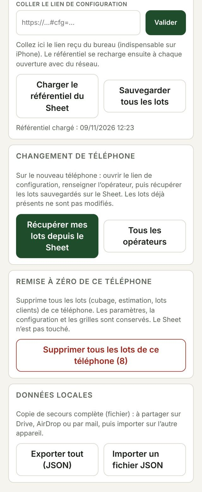 |
| a | Référentiel : essences, qualités, pas et bornes des classes (reçus du Sheet). |
| b | Saisie : qualité du 1er billon (reprise ou vide), saisie du diamètre sur pied (boutons de classes ou au cm), code du reste de tige (BI). |
| c | Mode vocal : mots pour les essences et les qualités ; mots de commentaire sous la forme « mot dit = texte enregistré » (ex. « gelé = gélivure ») ou un mot seul ; mot de départ (« note » ; vide = aucun) ; rejet des phrases mal comprises (recommandé) ; annonce de l'essence. Vérifier que les mots vocaux sont connus du moteur contrôle que tous ces mots sont connus du moteur. |
| d | Synchronisation : opérateur, adresse du script et clé (remplis par le lien de configuration), « Coller le lien de configuration ». |
| e | Changement de téléphone, remise à zéro du téléphone (supprime les lots du téléphone, pas ceux du Sheet), copie de secours (Exporter / Importer JSON). |
Services Bois et Forêts SAS · Loirecopark 1 · 72500 Vaas · SIRET 900 809 633 00010 — Cubage SBF, logiciel libre.
Captures réalisées sur un jeu de données de démonstration (chantiers, propriétaires et clients fictifs) ; le fond de carte est illustratif.